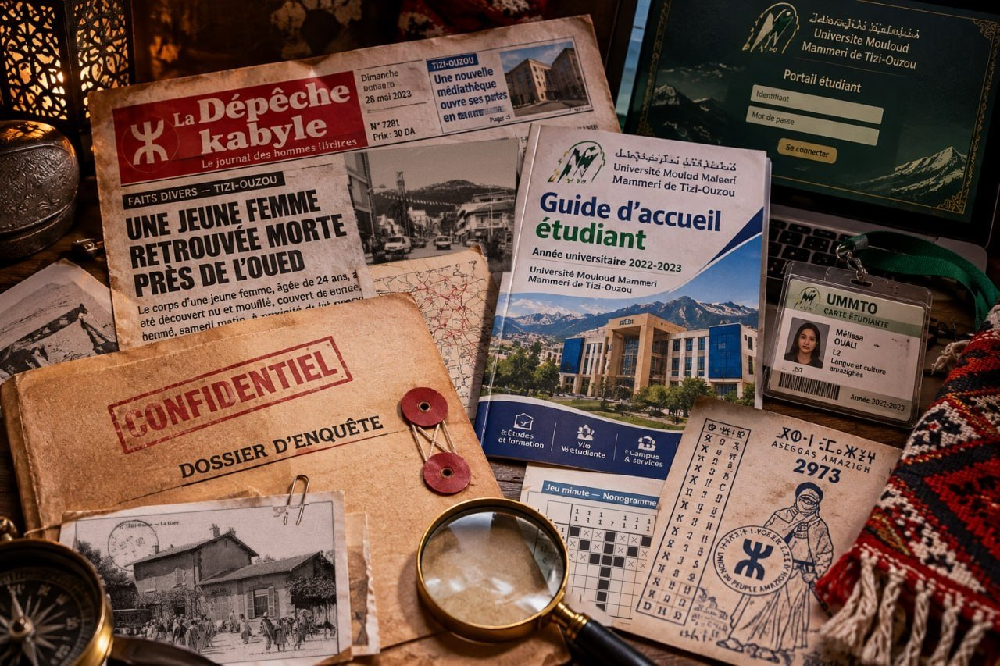

Projet 03 / Investigation narrative
Enquête en Kabylie.
Un jeu immersif au cœur de la Kabylie et de ses mystères.
Une affaire criminelle, des documents à explorer et une histoire dont il faudra rassembler les fragments.
En cours de développement

L’histoire
Chaque détail peut tout changer.
Au cœur de la Kabylie, entre traditions ancestrales, légendes et mystères, une affaire criminelle aux circonstances troublantes attend d’être élucidée.
Plongés dans un univers où se mêlent fiction et patrimoine culturel amazigh, les joueurs devront explorer des archives, décrypter des documents, confronter des témoignages et suivre les pistes d’une enquête aux multiples ramifications.
Une expérience immersive mêlant énigmes, investigation et narration, à travers des supports physiques et des interfaces numériques conçus pour brouiller les frontières entre fiction et réalité.
Les coulisses du projet
De la fiction au réel.
Un projet original en cours d’écriture, de conception et de prototypage. Les visuels présentés illustrent un univers en construction.
-
Écriture & recherche
Construction d’une intrigue nourrie par la documentation et la recherche culturelle.
-
Énigmes & supports
Création de documents, d’indices et de mécanismes d’investigation.
-
Expérience numérique
Développement d’interfaces fictives destinées à prolonger l’enquête.
L’aventure prend forme
Une enquête encore à écrire.
Les premières maquettes donnent vie à cet univers. Le jeu poursuit son développement avant de pouvoir accueillir ses futurs enquêteurs.
En cours de développement
Maquette de présentation · visuel composite de conception · interface fictive sans affiliation institutionnelle